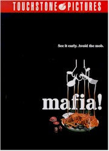
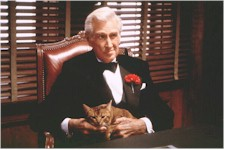
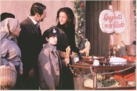

Contents | Features | Reviews | News | Archives | Store |
 |
|
| Movie Credits | Buy It! |
Jane Austen's Mafia
Review by Elias Savada
Posted 24 July 1998
|  | Directed by Jim
Abrahams. Starring Jay Mohr, Lloyd Bridges, Olympia Dukakis, Screenplay by Jim Abrahams, |
The current crop of television ads ask "If you have an hour and half to kill" you should spend it watching Mafia!, the latest send-up of just about every movie on earth (well it just seems that way) from Jim Abrahams, one of the creators (with David and Jerry Zucker) of Airplane!, certifiably one of the funniest spoofs ever filmed. Actually, I’d re-phrase the viewing time needed downward to maybe a half-hour, as there are enough yuks to fill up a funny short subject, which jives time-length-wise with the short-lived but hilarious 1982 Police Squad television episodes made by Messers Zucker, Abrahams, and Zucker. Following an explosive start, there is merely not ample comedy (sight-gags and non-sequiturs inclusive) to sustain this gangster comedy that boastfully borrows deeply from the storylines of Godfather (1972) and its 1974 sequel Godfather Part 2, but also appropriates characters, plots, or whatever from Jaws, E.T., Casino, Il Postino, Forrest Gump, and The Full Monty, just to name a few. I suspect the official website is running a "Where’s Waldo" contest (grand prize: a hearse-borne trip to Las Vegas) to guess how many movies the writers (Abrahams and collaborators Greg Norberg and Michael McManus, cohorts with the director on Hot Shots! Part Deux) hid in the script.
The late Lloyd Bridges, a veteran of Airplane! and the two Hot Shots! films, bumbles around as clueless Brandoesque godfather klutz Vincenzo Cortino to a family of criminal (or criminally insane) misfits. It’s appropriate that his last film is an Abrahams production, as the actor’s lengthy career was rejuvenated by his appearance as McCroskey in the director’s airport/airplane disaster spoof. Regrettably, the venerable Bridges doesn’t give off much of the energy that highlighted his extraordinary comic (and dramatic) career.Jay Mohr, also currently on screen in Small Soldiers, has been turning up the heat on his career since his two-year stint on Saturday Night Live in the mid 1990s and a small but significant role in Jerry Maguire as the eponymous character’s callous agent friend/foe. As the Al Pacino/Robert De Niro "straight" man here (Vincenzo’s son Anthony) he isn’t strong enough to carry the film, particularly in its weaker moments, although his voice is pleasant, providing the narrative voice-overs as he did in Paulie. His love interest is played Christina Applegate, who drifts in and out of the picture as the brainless Diane, who, of course, by film’s end, is playing the President of the United States. She does have one preciously funny scene (it’s in the trailer), when Anthony confronts her with a small child also named Diane. "You mean I’m a mother!" she exclaims in deadpan Jennifer Anniston style.
Rounding out the leads are Olympia Dukakis (I just caught a glimpse of her in the film. Sorry, I blinked.) and Billy Burke as Anthony’s psychotic brother Joey, who gets one of the film’s better laughs with an anatomical wonder that provides the perfect perch for a stray bird. Put that on your resume, eh?
The grunt factor, whereby my wife audibly groans under observation of bodily dismemberment, excessive barfing, or other testosterone-induced conditions, was high. One particular episode involves the young Vincenzo (Jason Fuchs), on the run from gangsters in Italy. The director/writers get extremely anal retentive in a gag embracing the child and a donkey, just before the boy heads for America behind (yes, behind) the good ship Il Pacino. Even I grunted. That’s not a good sign, even if the film is a parody. Disney’s Touchstone Pictures is releasing and while the film won’t tap into the crowd heading for Saving Private Ryan, it is up against probable strong second weekends for The Mask of Zorro and There’s Something About Mary.
You’ll notice I haven’t diverted into the storyline yet. And I won’t. There are confusing flashbacks to turn-of-the-century Sicily (a quaint village named Salmonella, "Home of Warm Mayonnaise"), amber-lit tenement life in New York City during the 1930s (peddlers selling used meat, dirty hats, and pre-squeezed olives dot the streets), and 1967 (and beyond) Las Vegas, where nitwit bettors lose at Guess the Number and Chutes and Ladders, while others – "the smart ones" – just mail in their money. The story isn’t important here. Goodfellas – especially some of their nicknames, America’s obsession with gambling, cholesterol-rich Italian pasta feasts, and immigrants are just some of the icons that are disfigured.
Maybe I’m being too hard on Jane Austen’s Mafia! (it’s screen title), but the jokes expire long before the film does as the various mob families, including the Jeffersons, and the ruling dons (as in Don Cornelius, Don Quixote) sort things out. Even Barney gets harpooned ... literally. As in previous films of this ilk, be sure to stay through the credits for some extra nonsense, if you make it to the theater at all.
Contents | Features | Reviews | News | Archives | Store
Copyright © 1999 by Nitrate Productions, Inc. All Rights Reserved.